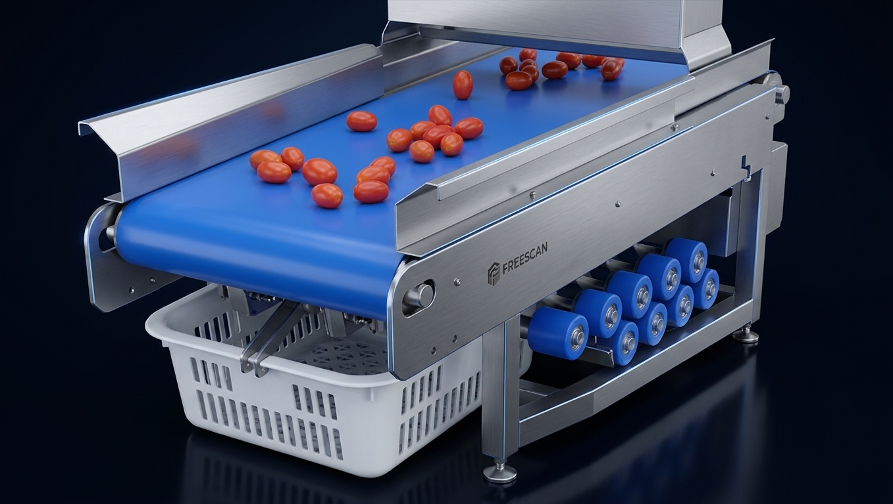
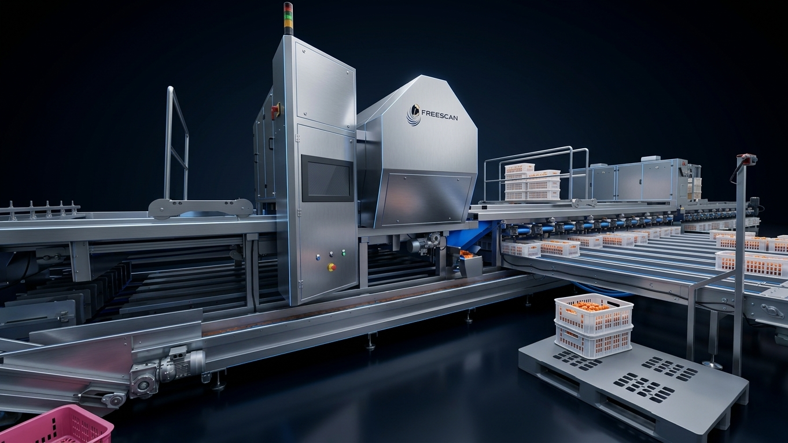
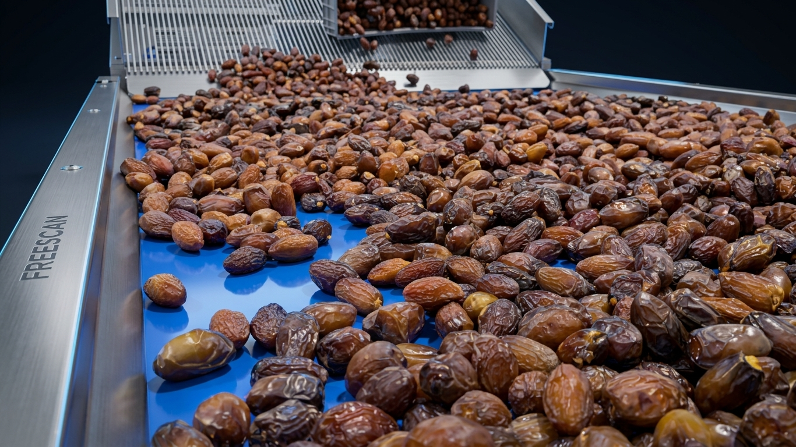
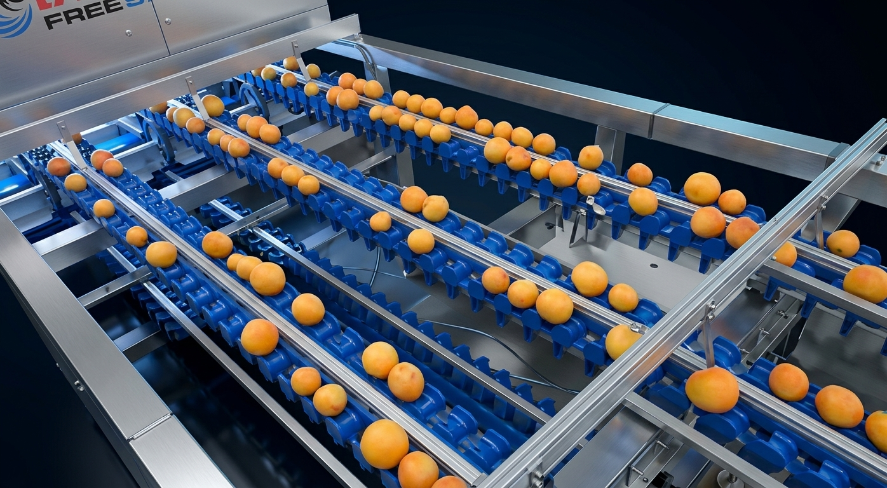
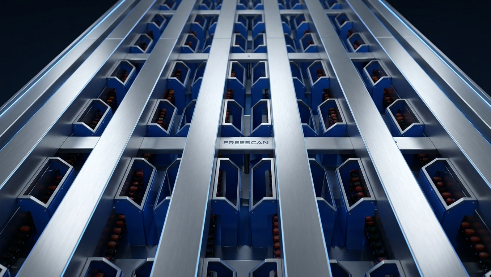
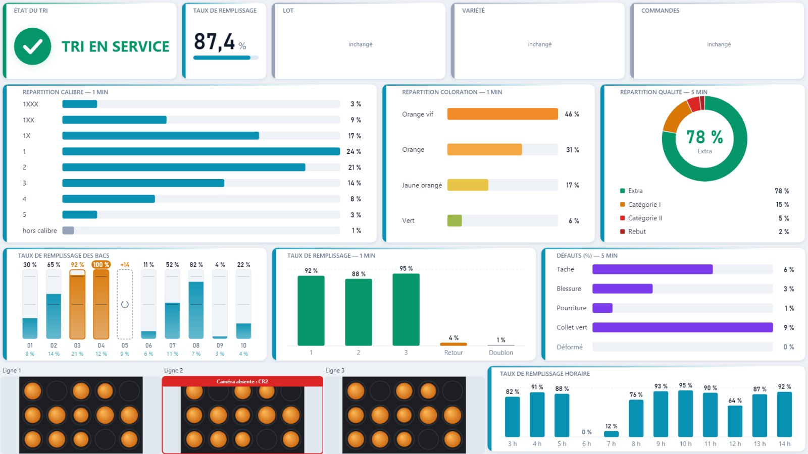
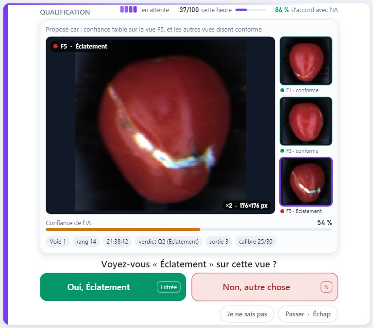
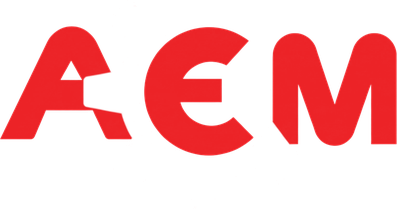

Cherry tomato
Cherry tomato
01 / 05
Cherry tomato.
Precise, steady grading at full speed, gentle on the fruit.

Freescan is the intelligent optical grader that photographs, measures and grades every fruit, then sends it to the right bin. Size, colour, defects, moisture: decided in an instant, fruit by fruit.
Every fruit has its signature. Freescan lights it, measures it and judges it, for fair, consistent grading.

AI trained on your fruit, judging each one with the same consistency.

Light chosen to reveal what matters on each product.

A measurement that goes beyond the visible.
Cherry tomatoPrecise, steady grading at full speed, gentle on the fruit.
 Tomato
TomatoUniform batches, crate after crate.

Orange and citrusConsistent quality, ready for the most demanding markets.
 Date
DateQuality measured beyond appearance.
 Blueberry
BlueberryCare for every berry, the gentlest handling.
Scroll down: follow the tomatoes from crate to bin, one unit at a time.
A 4-axis robot picks the full crates from the pallet and sets them lengthwise on a conveyor that carries them up to the tipper. As soon as two crates are in place, the drum turns and gently empties the tomatoes onto the belt.
An inclined cleated belt gently lifts the bulk fruit to the machine infeed.
Stainless-steel dividers spread the tomatoes across the machine's eight lanes.
Each lane is a chain fitted with spool rollers: one tomato between two axles, tracked to its exit. The rollers turn it to show every side.
At the entrance to the vision cell, the cabinet carries the touchscreen: the whole line in real time, and one recipe per variety.
Cameras and controlled lighting: every tomato is seen from every angle, and the AI judges size, colour and defects.
A short-wave infrared sensor measures what the eye cannot see, deep inside each fruit.
In front of its station, a short air jet lifts the fruit out of its cup without touching it.
One station per outlet: a belt runs under the chain and carries each grade to its crate, all on the same side. On the other side, an empty crate waits to take over.
Fruit moves forward one by one on several lanes. Each one is tracked from the camera to its exit.

 01
01Colour and infrared cameras, controlled lighting: every fruit is photographed from several angles as it rotates.
 02
02Size, colour and defects recognised by a neural network and, for dates, infrared moisture.
 03
03Each outlet accepts a size × colour × quality combination. A fruit with no possible place goes round again; it is not lost.
 04
04The ejector at the right outlet fires at the exact moment the fruit passes.



A touch interface designed for the shop floor: large buttons, statuses readable from afar, and settings that stay in the hands of authorised people.

Grading status, bin filling, breakdown by size, colour and quality, camera images.

Hue histogram, thresholds set by touch.

A doubtful defect? Yes or no: the AI learns.
Neural networks trained on your fruit, running on a graphics card.
Each outlet, its own size × colour × quality combination, set on screen.
Batch summary: quantities, sizes, colours, defects, ready to send.
Interface and online help illustrated with videos, in three languages.
Sizes, colours, defects and outlet assignments are saved per variety: switch products in seconds.
From fruit around the world to Moroccan packing lines: see the grader in production.

Send us your products and your grading requirements: we'll show you what Freescan does with them.